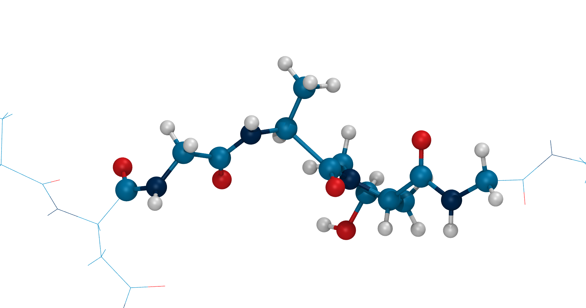
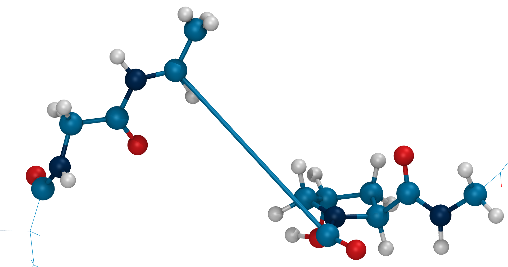
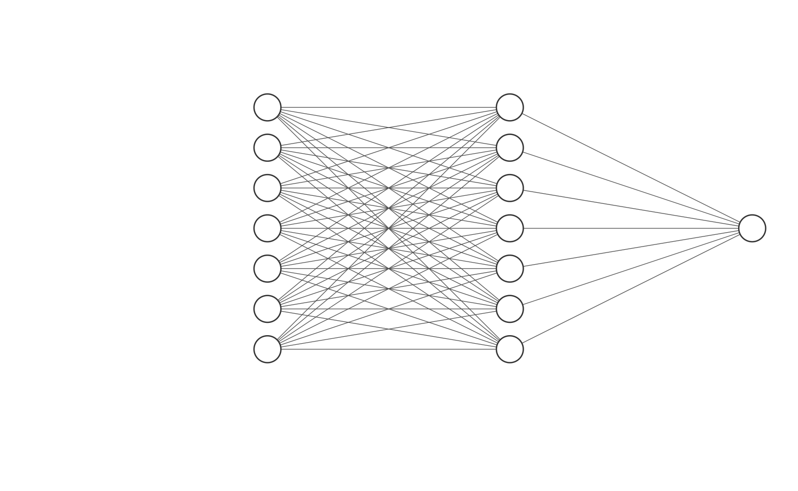

Bridging Timescales in Reactive Molecular Dynamics


Follow the QR code or visit
https://github.com/hits-mbm-dev/kimmdy-poster
for the repository of this poster.
Or even better yet, talk to me in front of the poster!
KIMMDY 2.0
A Monte Carlo Reactive Molecular Dynamics Framework


Follow the QR code or visit
https://github.com/hits-mbm-dev/kimmdy-poster
for the repository of this poster.
Or even better yet, talk to me in front of the poster!
Forcefield based molecular dynamics simulations allowed us to reach biologically relevant timescales and system sizes. A fundamental limit of this molecular mechanics approach is a lack of reactivity. We present a framework for combining classical molecular dynamics simulations with a kinetic Monte Carlo approach to bridge timescales and allow reactions to occur within a simulation. This is a generalization of our previous approach specifically targeted at bond breakages (1). It is implemented as a user-friendly, extensible python module based on the open-source high-performance molecular dynamics software suit GROMACS (2).
Chemical reactions occur on many timescales. And while those happening within femtoseconds can feasibly be simulated by quantum mechanical calculations, those that reach up to micro-, milli- or even full seconds can not. Forcefield-based molecular mechanics gets us into the microsecond timescale, but can not execute reactions. Even if it could, some reactions would still be inaccessible to our sampling due to their low rate.
KIMMDY skips ahead in time by querying possible reactions about their rates and choosing a reaction based on (rejection free) kinetic Monte Carlo. It then adjusts the topology of the system according to the reaction results and continues the MD simulation.


%%{init: {'theme': 'base',
'themeVariables': {
'primaryColor': '#1E4287',
'primaryTextColor': '#eee',
'fontSize': '1rem',
'fontFamily': 'Roboto'
}}}%%
stateDiagram-v2
parse: parse config.yml
eq: [MD] equilibration
prod: [MD] production
check: [check] reaction criteria
state stop <>
state ask <>
state decide <>
state cycle <>
pick: [MC] pick reation
execute: execute recipe
react1: reaction 1
react2: reaction 2
[*] --> parse
parse --> eq
eq --> sequence
state sequence {
[*] --> prod
prod --> check
check --> stop
stop --> prod
stop --> ask
ask --> react1
ask --> react2
react1 --> decide
react2 --> decide
decide --> pick
pick --> execute
execute --> cycle
cycle --> prod
cycle --> [*]: reached max_cycles
}
sequence --> [*]
KIMMDY is designed to be extensible with new reactions via a simple python plugin architecture. All a new reaction needs is a way of returning rates for possible reactions and the corresponding changes that need to be performed on the topology on acceptance.
For example, the bond rupture reaction (homolysis) estimates transition state energies with a bond stretching potential and then uses the Arrhenius equation Equation 1 to return rates.
k = Ae^{\frac{-\Delta E^\dagger}{RT}} \tag{1}(3)
Other reactions require more sophistication. Once a bond is ruptured, the remaining radicals can “jump” via Hydrogen Atom Transfer (HAT), for which you want to head over to the poster of Kai Riedmiller to see our Machine Learning solution for rate prediction.


topology changer
The first version of KIMMDY (1) is used to predict bond ruptures in collagen (the most abundant protein in connective tissue). Those are validated in experiments using Electron Paramagnetic Resonance (EPR), which detects the radicals produced by homolytic bond ruptures. Other reactions are harder to measure in vitro.
Further results will be validated with QMMM simulations using GROMACS(2) and CP2K(4). Together they can act as a molecular magnifying glass. Once KIMMDY has identified a region of interest and potential reactions, we can further investigate this site as a QM region within the context of a MM simulation.
KIMMDY 2.0 is not ready just yet, but expect to find the actively developed version here soon:
https://github.com/hits-mbm-dev/kimmdy.
This project has received funding from the European Research Council (ERC) under the European Union’s Horizon 2020 research and innovation program (grant agreement No. 101002812).
This work was supported by the Klaus Tschira Foundation.